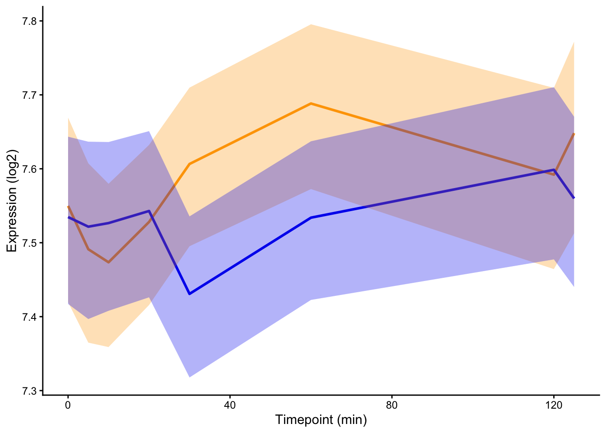

source(file = "functions_for_figure_scripts.R")
library(dplyr)
library(purrr)
load("data_files/FinalDataframe3Disp.RData")
load("data_files/GO_Slim.RData")
load("data_files/Cleaned_Counts.RData")
load("data_files/Cleaned_Counts_Allele.RData")
nGenes <- finaldf$gene_name |> unique() |> length() # for exact tests
# filtering for just Biological Processess
goslim_full <- goslim
goslim <- filter(goslim, GO_aspect == "P")environmentName(environment(select)) # should be dplyr## [1] "dplyr"environmentName(environment(degree)) # should be igraph## [1] "igraph"plotdf <- goslim_full |> filter(GO_aspect %in% c("F")) |>
dplyr::select(ORF, gene, GO_aspect, GOslim_term) |>
group_by(ORF, gene) |>
summarise(term_list = list(GOslim_term)) |>
ungroup() |>
full_join(y = finaldf,
by = c("ORF"="gene_name"),
relationship = "one-to-many")## `summarise()` has grouped output by 'ORF'. You can override using the `.groups` argument.# plotdf$membrane_transporter <- purrr::map2(plotdf$C, plotdf$P, \(comp, proc) {
# "membrane" %in% unlist(comp) & "transport" %in% unlist(proc)
# }) |> unlist()
plotdf$membrane_transporter <- purrr::map(plotdf$term_list, \(proc) {
"transmembrane transporter activity" %in% unlist(proc)
}) |> unlist()
gene_idxs <- filter(plotdf, experiment == "CC" & membrane_transporter) |>
dplyr::select(ORF) |> pull()
plotGenes(gene_idxs, .experiment_name = "CC") # 1-2 divergers## `summarise()` has grouped output by 'group_id', 'experiment'. You can override using the
## `.groups` argument.
plotdf$div12 <- plotdf$cer == 1 & plotdf$par == 2
plotdf |> filter(experiment == "CC") |>
dplyr::select(div12, membrane_transporter) |> table() |>
fisher.test() # slight enrichment of genes with transmembrane transporter activity among the HU Shock 1-2 divergers ##
## Fisher's Exact Test for Count Data
##
## data: table(dplyr::select(filter(plotdf, experiment == "CC"), div12, membrane_transporter))
## p-value = 0.01637
## alternative hypothesis: true odds ratio is not equal to 1
## 95 percent confidence interval:
## 1.078135 2.397507
## sample estimates:
## odds ratio
## 1.628017plotdf |> filter(experiment == "Cold") |>
dplyr::select(div12, membrane_transporter) |> table() |>
fisher.test() # also true in Cold (not in any other environments or reversal directions)##
## Fisher's Exact Test for Count Data
##
## data: table(dplyr::select(filter(plotdf, experiment == "Cold"), div12, membrane_transporter))
## p-value = 0.0106
## alternative hypothesis: true odds ratio is not equal to 1
## 95 percent confidence interval:
## 1.127379 2.883814
## sample estimates:
## odds ratio
## 1.838415printGeneList <- function(.gene_idxs, .folder = "gene_ontology/gene_lists/",
.file_name = "test", .file_suffix = ".txt") {
return(write.table(.gene_idxs,
file = paste0(.folder, .file_name, .file_suffix),
quote = FALSE,
row.names = FALSE,
col.names = FALSE))
}
# # tests for printGeneList
# test <- printGeneList(.gene_idxs = c("YGR192C", "YJR009C", "YJL052W"),
# .file_name = "TDHs")getGOSlimDf <- function(.idxs, .group_name, .file_prefix = "gene_ontology/results/",
.min_hits = 5) {
test_table <- goslim |> filter(ORF %in% .idxs) |> dplyr::select(GOslim_term) |> table()
test_table <- test_table[test_table >= .min_hits]
testdf <- tibble("term" = names(test_table),
"group_count" = as.numeric(test_table))
testdf$overall_count <- purrr::map(testdf$term, \(x) {
ct <- goslim |> filter(GOslim_term == x) |> dplyr::select(ORF) |>
pull() |> unique() |> length()
return(ct)
}) |> unlist()
testdf$exact_pval <- map2(testdf$group_count, testdf$overall_count, \(x, y) {
n_mod <- length(.idxs)
n_genes <- nGenes
exact_table <- rbind(c(x, n_mod - x), c(y - x, n_genes - n_mod - y))
exact_result <- fisher.test(exact_table, alternative = "greater")
return(exact_result$p.value)
}) |> unlist()
testdf$sig <- testdf$exact_pval < 0.001
testdf$genes <- purrr::map(testdf$term, \(x) {
termgenes <- goslim |> filter(ORF %in% .idxs & GOslim_term == x) |>
dplyr::select(ORF) |> pull() |> unique()
return(purrr::reduce(termgenes, paste, sep = " "))
}) |> unlist()
# writing to csv
write_csv(arrange(testdf, exact_pval, desc(group_count)),
file = paste0(.file_prefix, .group_name, ".csv"),
quote = "none",
col_names = TRUE)
return(testdf)
}
# tests for getGOSlimDf
test <- getGOSlimDf(.idxs = c("YGR192C", "YJR009C", "YJL052W"),
.group_name = "tdhs", .min_hits = 1)
test## # A tibble: 12 × 6
## term group_count overall_count exact_pval sig genes
## <chr> <dbl> <int> <dbl> <lgl> <chr>
## 1 biosynthetic process 3 973 0.00800 FALSE YGR1…
## 2 carbohydrate metabolic process 3 106 0.0000101 TRUE YGR1…
## 3 catabolic process 3 615 0.00202 FALSE YGR1…
## 4 cell death 2 23 0.0000641 TRUE YGR1…
## 5 cellular nitrogen compound metabolic process 3 1386 0.0232 FALSE YGR1…
## 6 generation of precursor metabolites and energy 3 115 0.0000129 TRUE YGR1…
## 7 monoatomic ion transport 1 71 0.0432 FALSE YGR1…
## 8 monocarboxylic acid metabolic process 3 105 0.00000980 TRUE YGR1…
## 9 nucleobase-containing compound catabolic proc… 3 165 0.0000384 TRUE YGR1…
## 10 nucleobase-containing small molecule metaboli… 3 172 0.0000436 TRUE YGR1…
## 11 small molecule metabolic process 3 556 0.00149 FALSE YGR1…
## 12 transport 1 874 0.448 FALSE YGR1…Manually selecting groups of terms related to broader but meaningful biological processes.
# @input: GOslim enrichment results df for one ccm, character vector of GOslim terms to combine
# @output: character vector of all the genes associated with those terms in that ccm, each gene only appearing once
getCombinedTermGenes <- function(.df, .term_vec) {
.df |> filter(term %in% .term_vec) |>
dplyr::select(genes) |> pull() |> purrr::map(.f = strsplit, split = " ") |>
unlist() |> unique()
}# manually combining terms
term_RNAprocessing <- c("mRNA binding",
"sno(s)RNA processing",
"mRNA processing",
"nucleobase-containing compound catabolic process",
"nucleobase-containing small molecule metabolic process",
"RNA binding",
"RNA modification",
"RNA catabolic process",
"RNA splicing",
"protein-RNA complex assembly",
"small nuclear ribonucleoprotein complex",
"spliceosomal complex",
"U2-type spliceosomal complex",
"U4/U6 x U5 tri-snRNP complex",
"U6 snRNP",
"box C/D RNP complex")
term_chaperone <- c("chaperonin-containing T-complex",
"prefoldin complex",
"protein-containing complex assembly",
"protein folding",
"protein folding chaperone complex",
"protein glycosylation",
"protein acylation",
"protein maturation",
"protein modification by small protein conjugation or removal",
"protein targeting",
"unfolded protein binding")
term_proteasome <- c("proteasome core complex, alpha-subunit complex",
"proteasome core complex, beta-subunit complex",
"proteasome regulatory particle, lid subcomplex",
"proteasome storage granule")
term_mRNADegrading <- c("P-body", "Lsm1-7-Pat1 complex")
term_transport <- c("Golgi vesicle transport",
"nuclear transport",
"nucleocytoplasmic transport",
"transport",
"vacuolar transport",
"vacuole",
"vacuole organization",
"vesicle-mediated transport",
"regulation of transport",
"vesicle organization")
term_vacuoleGolgiTransport <- c("Golgi vesicle transport",
"transport",
"vacuolar transport",
"vacuole",
"vacuole organization",
"vesicle-mediated transport",
"regulation of transport",
"vesicle organization")
term_metabolism <- c("carbohydrate metabolic process",
"catabolic process",
"cellular nitrogen compound metabolic process",
"hydrolase activity",
"nucleobase-containing compound catabolic process",
"nucleobase-containing small molecule metabolic process",
"small molecule metabolic process")
term_cytoskeleton <- c("cytoplasmic microtubule",
"cytoskeletal protein binding",
"cytoskeleton organization",
"cytoskeleton-dependent intracellular transport",
"microtubule",
"microtubule organizing center",
"organelle assembly",
"organelle fusion",
"regulation of organelle organization",
"site of polarized growth",
"cell cortex")
term_cellularRespiration <- c("generation of precursor metabolites and energy",
"MICOS complex",
"mitochondrial proton-transporting ATP synthase complex coupling factor F(o)",
"mitochondrial respiratory chain complex III",
"mitochondrial respiratory chain complex IV",
"cellular respiration")
term_DNArepairMetabolismBinding <- c("DNA binding",
"DNA damage response",
"DNA metabolic process",
"DNA recombination",
"DNA repair",
"DNA-binding transcription factor activity",
"DNA-templated transcription",
"telomere organization")
term_transcription <- c("RNA polymerase II transcription regulator complex",
"DNA-templated transcription",
"transcription",
"DNA-templated transcription elongation",
"DNA-templated transcription termination",
"RNA polymerase I complex",
"RNA polymerase II core complex",
"RNA polymerase III complex",
"transcription by RNA polymerase I",
"transcription by RNA polymerase II",
"transcription by RNA polymerase III")
term_translation <- c("translation",
"cytoplasmic translation",
"regulation of translation",
"translational initiation",
"translational elongation",
"eukaryotic 48S preinitiation complex",
"eukaryotic translation initiation factor 3 complex",
"translation factor activity RNA binding")
term_tRNA <- c("tRNA aminoacylation for protein translation",
"tRNA metabolic process",
"tRNA methyltransferase complex",
"tRNA processing")
term_TF <- c("DNA-binding transcription factor activity",
"transcription factor binding",
"transcription regulator complex")
term_chromatin <- c("chromatin",
"chromatin binding",
"chromatin organization",
"NuA4 histone acetyltransferase complex",
"histone acetyltransferase complex",
"histone deacetylase complex",
"rDNA heterochromatin")
term_cellCycle <- c("chromosome segregation",
"regulation of cell cycle")
term_ubiquitin <- c("ubiquitin ligase complex",
"ubiquitin-like protein binding")
term_exoendocytosis <- c("endocytosis",
"exocytosis",
"SNARE complex",
"endosomal transport",
"endosome")
term_endocytosis <- c("endocytosis",
"endosomal transport",
"endosome")
term_membrane <- c("membrane",
"membrane fusion",
"membrane organization",
"transmembrane transporter activity",
"transmembrane transport")
term_ribosome <- c("90S preribosome",
"cytosolic large ribosomal subunit",
"cytosolic small ribosomal subunit",
"cytosolic ribosome",
"large ribosomal subunit",
"preribosome",
"preribosome large subunit precursor",
"ribonucleoprotein complex",
"ribosome biogenesis",
"ribosomal subunit export from nucleus",
"rRNA processing",
"protein-RNA complex assembly",
"sno(s)RNA-containing ribonucleoprotein complex",
"rRNA binding",
"small ribosomal subunit",
"structural constituent of ribosome",
"preribosome small subunit precursor",
"Pwp2p-containing subcomplex of 90S preribosome",
"small-subunit processome",
"t-UTP complex")
term_mitochondrialTranslation <- c("mitochondrial large ribosomal subunit",
"mitochondrial small ribosomal subunit",
"mitochondrial translation")
term_mitochondria <- c("mitochondrion",
"mitochondrion organization")
term_bioMoleculeSynthesis <- c("small molecule metabolic process",
"nucleobase-containing small molecule metabolic process",
"biosynthetic process",
"amino acid metabolic process",
"lipid metabolic process",
"monocarboxylic acid metabolic process",
"tRNA metabolic process")
term_stress <- c("response to stress",
"sporulation",
"response to heat",
"response to osmotic stress",
"DNA damage response",
"response to oxidative stress",
"response to chemical")GO analysis of specific regulons with over 30% diverged plasticity genes (regulons of PDR1, PDR3, RLM1, RPN4, YAP1, etc.)
goslim <- goslim_full |> filter(GO_aspect == "F")
load("data_files/GOinput.RData")
GOgriddf <- group_by(GOdf, regulator, regulator_common, environment) |>
summarise(nTargets = n()) |>
ungroup()## `summarise()` has grouped output by 'regulator', 'regulator_common'. You can override using the
## `.groups` argument.GOlist <- purrr::map2(GOgriddf$regulator, GOgriddf$environment, \(tf, e) {
tf_common <- GOdf |> filter(regulator == tf) |> dplyr::select(regulator_common) |>
pull() |> unique()
GOgene_idxs <- filter(GOdf, environment == e & regulator == tf) |>
dplyr::select(target) |> pull()
gene_idxs <- filter(finaldf, gene_name %in% GOgene_idxs &
experiment == e & plasticity == "diverged") |>
dplyr::select(gene_name) |> pull()
if (length(gene_idxs) > 5) {
slimlist <- getGOSlimDf(.idxs = gene_idxs,
.group_name = paste(tf_common, e, length(gene_idxs), "genes", sep = "_"),
.file_prefix = "gene_ontology/results/regulons/function/div30/",
.min_hits = 0)
}
if (length(gene_idxs) <= 5) {
slimlist <- NA
}
return(slimlist)
})
names(GOlist) <- paste(GOgriddf$regulator_common, GOgriddf$environment, sep = "_")GO analysis of remaining regulons with higher conserved proportions
goslim <- goslim_full |> filter(GO_aspect == "F")
load("data_files/GOinputConserved.RData")
GOgriddf <- group_by(GOdf_conserved, regulator, regulator_common, environment) |>
summarise(nTargets = n()) |>
ungroup()## `summarise()` has grouped output by 'regulator', 'regulator_common'. You can override using the
## `.groups` argument.GOlist <- purrr::map2(GOgriddf$regulator, GOgriddf$environment, \(tf, e) {
tf_common <- GOdf_conserved |> filter(regulator == tf) |> dplyr::select(regulator_common) |>
pull() |> unique()
GOgene_idxs <- filter(GOdf_conserved, environment == e & regulator == tf) |>
dplyr::select(target) |> pull()
gene_idxs <- filter(finaldf, gene_name %in% GOgene_idxs &
experiment == e & plasticity == "conserved") |>
dplyr::select(gene_name) |> pull()
if (length(gene_idxs) > 5) {
slimlist <- getGOSlimDf(.idxs = gene_idxs,
.group_name = paste(tf_common, e, length(gene_idxs), "genes", sep = "_"),
.file_prefix = "gene_ontology/results/regulons/function/conserved/",
.min_hits = 0)
}
if (length(gene_idxs) <= 5) {
slimlist <- NA
}
return(slimlist)
})
names(GOlist) <- paste(GOgriddf$regulator_common, GOgriddf$environment, sep = "_")Archive: Counting number of genes in each plasticity group that are associated with terms belong to the combined term (the combined term was decided by visually inspecting the full GOslim results):
Looping through all the plasticity reversal categories to get GOSlim results:
griddf <- expand_grid(experiment = ExperimentNames,
cer_clust = c(1, 2))
slimlist <- vector(mode = "list", length = nrow(griddf))
for (i in 1:nrow(griddf)) {
e <- griddf$experiment[i]
cer_clust <- griddf$cer_clust[i]
par_clust <- setdiff(c(1, 2), cer_clust)
gene_idxs <- filter(finaldf, experiment == e &
cer == cer_clust &
par == par_clust) |>
dplyr::select(gene_name) |> pull()
slimlist[[i]] <- getGOSlimDf(.idxs = gene_idxs,
.group_name = paste0(e, cer_clust, par_clust))
}
names(slimlist) <- as.character(apply(griddf, 1, \(x) {paste(x[1], x[2], sep = "_")}))# HAP4, 1-2, chaperone and transport
term_genes <- getCombinedTermGenes(slimlist$HAP4_1, .term_vec = c(term_chaperone, term_transport))
all_genes <- finaldf |> filter(experiment == "HAP4" & cer == 1 & par == 2) |> dplyr::select(gene_name) |> pull()
sum(term_genes %in% all_genes)/length(term_genes)## [1] NaNsum(term_genes %in% all_genes)## [1] 0length(all_genes)## [1] 55# HAP4, 2-1, DNA repair and golgi/vessicle transport
term_genes <- getCombinedTermGenes(slimlist$HAP4_2, .term_vec = c(term_DNArepairMetabolismBinding, term_vacuoleGolgiTransport))
all_genes <- finaldf |> filter(experiment == "HAP4" & cer == 2 & par == 1) |> dplyr::select(gene_name) |> pull()
sum(term_genes %in% all_genes)/length(term_genes)## [1] 1sum(term_genes %in% all_genes)## [1] 26length(all_genes)## [1] 289# CC, 1-2, respiration and metabolism
term_genes <- getCombinedTermGenes(slimlist$CC_1, .term_vec = c(term_cellularRespiration, term_metabolism))
all_genes <- finaldf |> filter(experiment == "CC" & cer == 1 & par == 2) |> dplyr::select(gene_name) |> pull()
sum(term_genes %in% all_genes)/length(term_genes)## [1] 1sum(term_genes %in% all_genes)## [1] 52length(all_genes)## [1] 405# CC, 2-1, ribosome and tRNA processing
term_genes <- getCombinedTermGenes(slimlist$CC_2, .term_vec = c(term_ribosome, term_tRNA))
all_genes <- finaldf |> filter(experiment == "CC" & cer == 2 & par == 1) |> dplyr::select(gene_name) |> pull()
sum(term_genes %in% all_genes)/length(term_genes)## [1] 1sum(term_genes %in% all_genes)## [1] 24length(all_genes)## [1] 567# LowN, 1-2, protein folding and translation
term_genes <- getCombinedTermGenes(slimlist$LowN_1, .term_vec = c(term_chaperone, term_translation))
all_genes <- finaldf |> filter(experiment == "LowN" & cer == 1 & par == 2) |> dplyr::select(gene_name) |> pull()
sum(term_genes %in% all_genes)/length(term_genes)## [1] NaNsum(term_genes %in% all_genes)## [1] 0length(all_genes)## [1] 52# LowN, 2-1, lipid/amino acid/tRNA synthesis
term_genes <- getCombinedTermGenes(slimlist$LowN_2, .term_vec = term_bioMoleculeSynthesis)
all_genes <- finaldf |> filter(experiment == "LowN" & cer == 2 & par == 1) |> dplyr::select(gene_name) |> pull()
sum(term_genes %in% all_genes)/length(term_genes)## [1] NaNsum(term_genes %in% all_genes)## [1] 0length(all_genes)## [1] 75# LowPi, 1-2, stress and protein folding
term_genes <- getCombinedTermGenes(slimlist$LowPi_1, .term_vec = c(term_stress, term_chaperone))
all_genes <- finaldf |> filter(experiment == "LowPi" & cer == 1 & par == 2) |> dplyr::select(gene_name) |> pull()
sum(term_genes %in% all_genes)/length(term_genes)## [1] 1sum(term_genes %in% all_genes)## [1] 9length(all_genes)## [1] 375# LowPi, 2-1, ribosome, tRNA, and small molecule biosynthesis
term_genes <- getCombinedTermGenes(slimlist$LowPi_2, .term_vec = c(term_ribosome, term_tRNA, term_bioMoleculeSynthesis))
term_genes_cc <- getCombinedTermGenes(slimlist$CC_2, .term_vec = c(term_ribosome, term_tRNA))
length(intersect(term_genes, term_genes_cc)) # comparing to CC 2-1 which had the same term enrichment## [1] 10length(union(term_genes, term_genes_cc)) # some overlap## [1] 34all_genes <- finaldf |> filter(experiment == "LowPi" & cer == 2 & par == 1) |> dplyr::select(gene_name) |> pull()
sum(term_genes %in% all_genes)/length(term_genes)## [1] 1sum(term_genes %in% all_genes)## [1] 20length(all_genes)## [1] 803# Heat, 1-2, translation, RNA processing, ribosome
term_genes <- getCombinedTermGenes(slimlist$Heat_1, .term_vec = c(term_translation, term_RNAprocessing, term_ribosome))
all_genes <- finaldf |> filter(experiment == "Heat" & cer == 1 & par == 2) |> dplyr::select(gene_name) |> pull()
sum(term_genes %in% all_genes)/length(term_genes)## [1] 1sum(term_genes %in% all_genes)## [1] 26length(all_genes)## [1] 118# Heat, 2-1, transcription, small molecule synthesis
term_genes <- getCombinedTermGenes(slimlist$Heat_2, .term_vec = c(term_transcription, term_tRNA, term_bioMoleculeSynthesis))
all_genes <- finaldf |> filter(experiment == "Heat" & cer == 2 & par == 1) |> dplyr::select(gene_name) |> pull()
sum(term_genes %in% all_genes)/length(term_genes)## [1] NaNsum(term_genes %in% all_genes)## [1] 0length(all_genes)## [1] 431# Cold, 1-2, translation, ribosome, and cellular nitrogen compound metabolic process
term_genes <- getCombinedTermGenes(slimlist$Cold_1, .term_vec = c(term_translation, term_RNAprocessing, term_ribosome, "cellular nitrogen compound metabolic process"))
all_genes <- finaldf |> filter(experiment == "Cold" & cer == 1 & par == 2) |> dplyr::select(gene_name) |> pull()
sum(term_genes %in% all_genes)/length(term_genes)## [1] 1sum(term_genes %in% all_genes)## [1] 67length(all_genes)## [1] 262# Cold, 2-1, translation, transport
term_genes <- getCombinedTermGenes(slimlist$Cold_2, .term_vec = c(term_translation, term_transport))
all_genes <- finaldf |> filter(experiment == "Cold" & cer == 2 & par == 1) |> dplyr::select(gene_name) |> pull()
sum(term_genes %in% all_genes)/length(term_genes)## [1] NaNsum(term_genes %in% all_genes)## [1] 0length(all_genes)## [1] 97